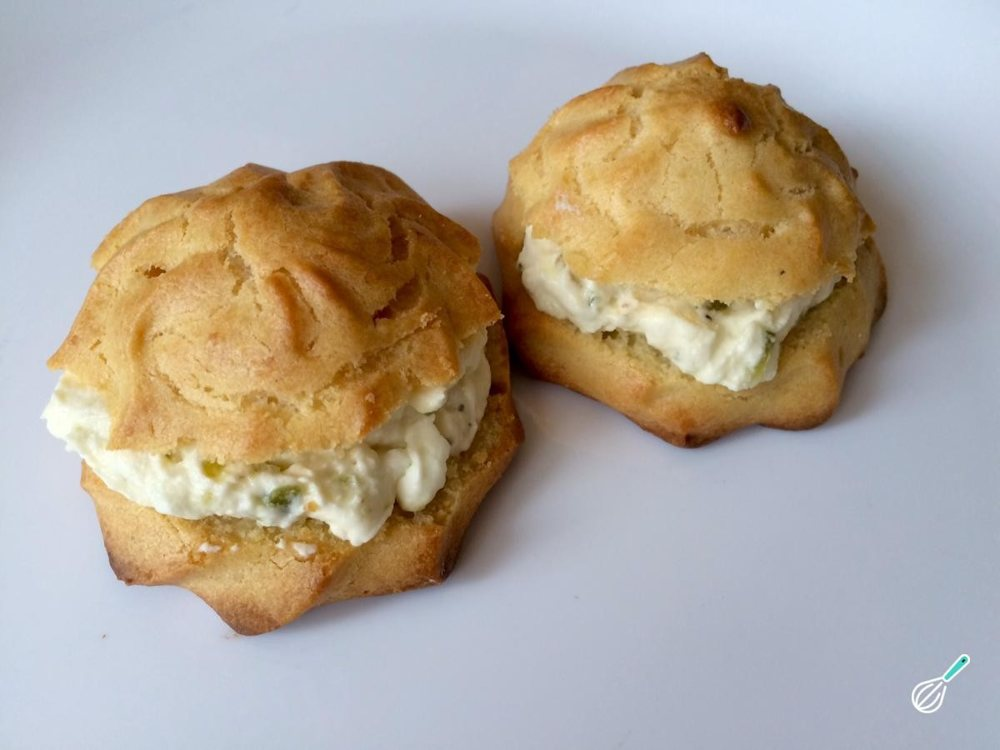

Salgados · Petiscos
Choux recheados

Ingredientes
- 1 xícara de água
- ½ xícara de manteiga
- 1 xícara de farinha de trigo
- 1 pitada de sal
- 3 ovos grandes
- 200 g de ricota
- 2 colheres (sopa) de manteiga
- Sal e pimenta-do-reino a gosto
- 1 colher (sopa) de manjericão fresco picado
Modo de preparo
- Coloque a água e a manteiga numa panela pequena e leve ao fogo médio sem mexer.
- Deixe a mistura ferver, retire do fogo e junte, de uma só vez, a farinha de trigo com o sal. Misture vigorosamente com uma colher de pau.
- Leve a panela de volta ao fogo e continue mexendo até a massa se desprender do fundo da panela. Retire do fogo e deixe amornar, mexendo de vez em quando.
- Acrescente o primeiro ovo e, com uma colher, mexa vigorosamente para incorporá-lo à massa. Proceda da mesma maneira para incorporar os ovos restantes. Preaqueça o forno em temperatura média (180 °C).
- Unte uma assadeira com manteiga e polvilhe com farinha. Ponha a massa num saco de confeitar com bico liso e faça montinhos na assadeira, deixando bastante espaço entre eles.
- Leve ao forno preaquecido até os choux ficarem crescidos e sequinhos por fora, mas um pouco crus por dentro. Retire do forno e deixe esfriar sobre uma grade. Congele.
- Prepare o recheio: passe a ricota por uma peneira, recolhendo-a numa tigela. Junte a manteiga, sal e pimenta a gosto e o manjericão. Misture bem e congele.
Observação
Você pode rechear os choux com o recheio da Empadinha de palmito ou o do Rissoles de camarão. Congelamento: coloque os choux em sacos plásticos e retire o ar; feche hermeticamente, etiquete e congele. Ponha o recheio num recipiente que possa ir ao freezer, embale em filme plástico, etiquete e congele. Descongelamento: descongele os choux e o recheio na geladeira de um dia para o outro. Leve os choux ao forno preaquecido em temperatura média (180 °C) para terminarem de assar (10 a 15 minutos). Corte-os ao meio e recheie.